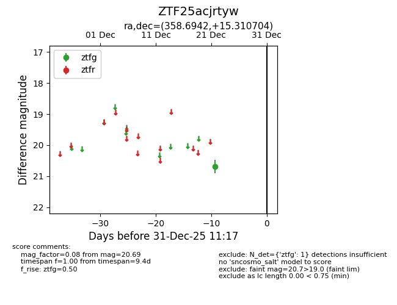
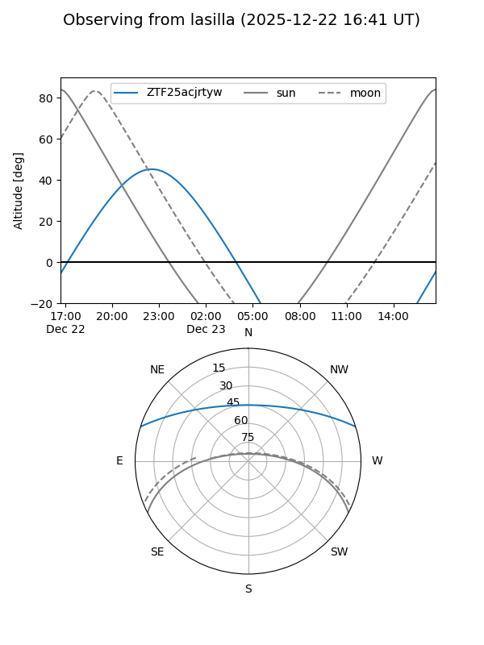
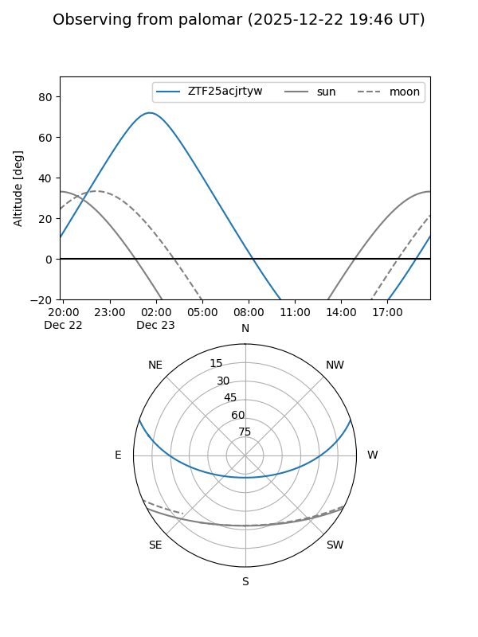

ZTF25acjrtyw
Target ZTF25acjrtyw at 2025-12-31 18:00
Aliases and brokers:
FINK: link
Lasair: link
ALeRCE: link
alt names
ZTF25acjrtyw (ztf,fink_ztf)
Coordinates:
equatorial (ra, dec) = 358.6942,+15.31070
equatorial (HMS+DMS) = 23:54:46.60,+15:18:38.53
galactic (l, b) = (103.2927,-45.38938)
Flags:
Photometry:
last ztfg=20.69
1 ztfg detections
Lightcurve

Visibility


Additional plots